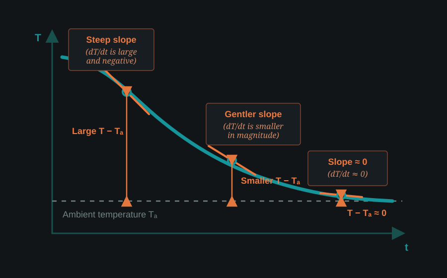
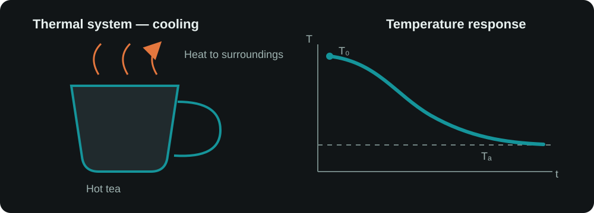
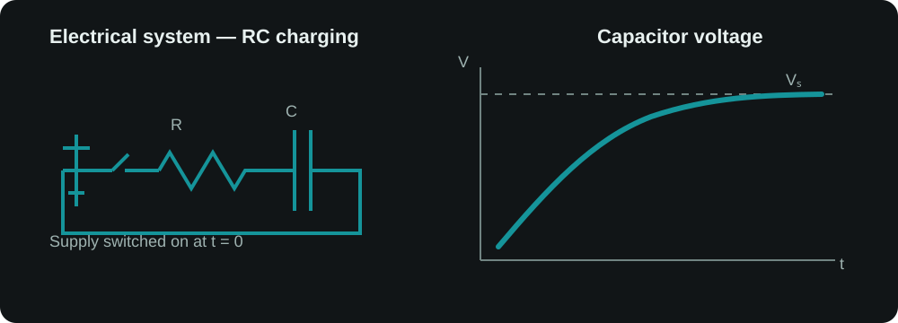
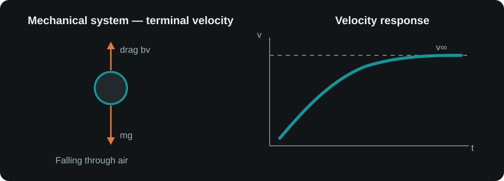
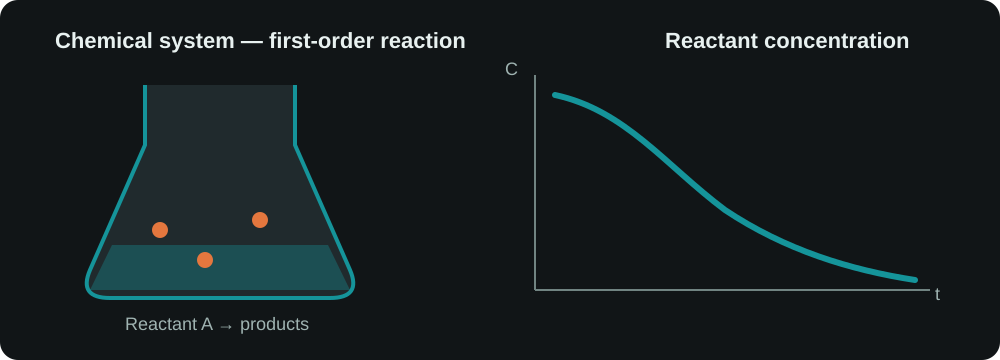

First-Order Systems
Everything around us changes with time — temperature, position, speed, voltage and current. But can we describe how something changes well enough to predict what it will do next?
How can mathematics predict the future behavior of a changing physical system?
Change is everywhere
Hot tea cools quickly at first and then gradually slows as it approaches room temperature. A capacitor charges quickly at first and then more slowly. A chemical concentration can gradually decrease.
We are interested not just in what changes, but in the dynamics of how things change with time.
1. Average Rate of Change
Suppose the temperature falls from 80°C to 60°C in 10 minutes.
This tells us the overall rate during those 10 minutes.
Why isn't average rate enough?
The tea cools faster when it is hot and more slowly as it approaches room temperature. So it could not have been cooling at exactly −2°C/min throughout the entire interval.
The average tells us what happened over an interval, but not what was happening at a particular instant.
2. Instantaneous Rate of Change
What if we want to know: How fast is the temperature changing exactly at 2 minutes?
We calculate the average rate over smaller and smaller intervals: 2 to 3 minutes, then 2 to 2.1, then 2 to 2.01… As the interval shrinks, the average rate approaches the rate at that instant.
dT/dt is the derivative of temperature with respect to time.
3. From Rate to a Differential Equation
For hot tea, we observe that the hotter the tea is compared with the room, the faster it cools. The rate therefore depends on the temperature difference.
- T — tea temperature at time t
- Ta — ambient temperature
- k — constant describing how quickly this setup cools
This is Newton's law of cooling. It is a differential equation because it relates a quantity T to its rate of change dT/dt.
4. What Should the Curve Look Like?
Before solving anything, can we predict the nature of the curve?
Smaller temperature difference → smaller cooling rate
Very small difference → very small cooling rate
So we expect the temperature curve to be steep at first → gradually less steep → almost flat near ambient temperature.

This does not give us the exact mathematical curve. It gives us the behavior we should expect from the physical relationship.
5. Can We Predict the Future?
Intuition tells us the nature of the curve. But it cannot tell us the temperature after 5 minutes, 10 minutes, or exactly how long it takes to reach a chosen temperature.
For that, we need to find T as a function of time t. We need to solve the differential equation.
Separate temperature from time:
Integrate both sides:
Using the initial condition T(0) = T0:
We started with an observation about how something changes and arrived at an equation that can predict its future behavior.
6. What Does the Equation Tell Us?
- Ta is the ambient temperature the tea approaches.
- T0 is its initial temperature.
- k controls how quickly the system responds.
The value of k depends on the physical setup — container, exposed area, air movement, heat-transfer properties and evaporation. It is not universal.
The time constant
Engineers often describe response speed using the time constant τ.
A larger τ means a slower response; a smaller τ means a faster response. After one time constant, the system has completed about 63% of its journey toward steady state.
7. Test It Yourself
Cooling Lab
Change T0, Ta and τ. Predict what will happen before running the experiment.
8. One Idea, Many Systems
Temperature is only one example. The same first-order mathematical structure appears in very different physical systems.
Thermal — Cooling
A hot object cools quickly when its temperature difference from the surroundings is large, then slows as it approaches ambient temperature.

T(t) = Ta + (T0 − Ta)e−t/τ
Electrical — RC Charging
An initially uncharged capacitor charges quickly at first. As its voltage approaches the supply voltage, current falls and charging slows.

V(t) = Vs + (V0 − Vs)e−t/RC
Here τ = RC.
Mechanical — Falling with Linear Air Resistance
Gravity initially accelerates the object strongly. As velocity rises, linear air resistance rises too, until acceleration approaches zero and velocity approaches terminal velocity.

v(t) = v∞ + (v0 − v∞)e−t/τ
Here v∞ = mg/b and τ = m/b.
Chemical — First-Order Reaction
For a first-order reaction, the rate at which reactant A disappears is proportional to how much A remains.

C(t) = C0e−t/τ
Here τ = 1/k.
Different physics. Same mathematical structure.
x(t) = x∞ + (x0 − x∞)e−t/τ
Temperature, voltage, velocity and concentration are different physical quantities. Look past the symbols and the same first-order behavior appears.
Continue to Second-Order Systems →